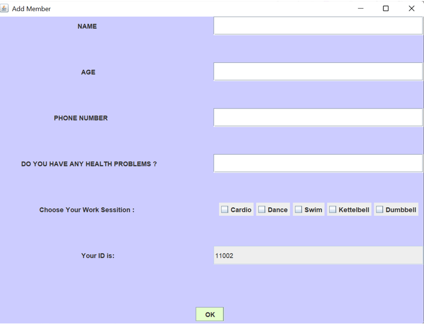
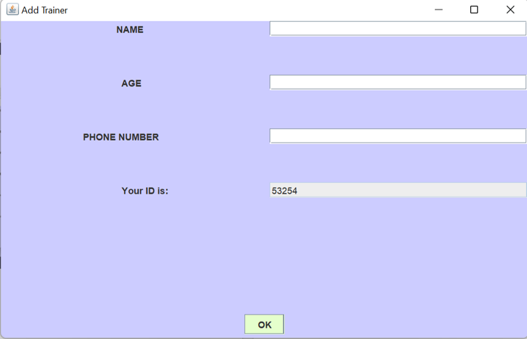
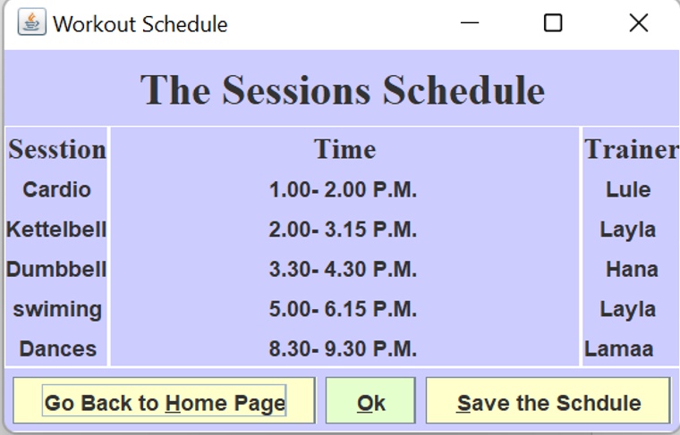
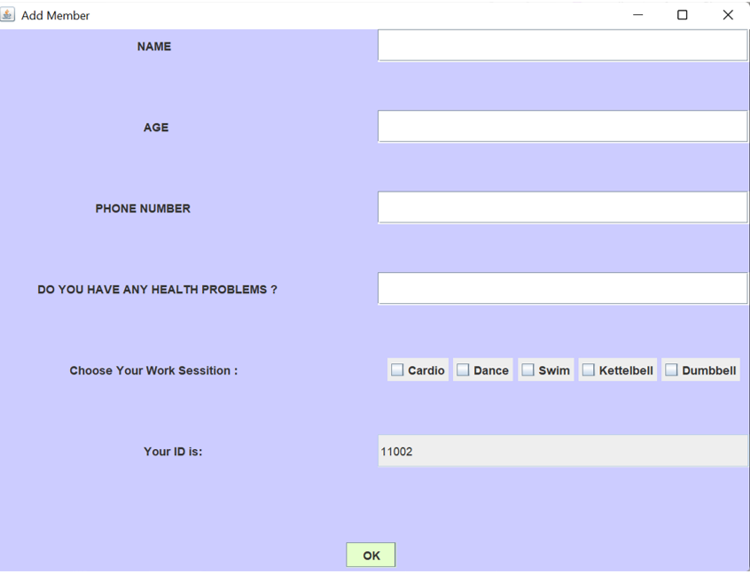
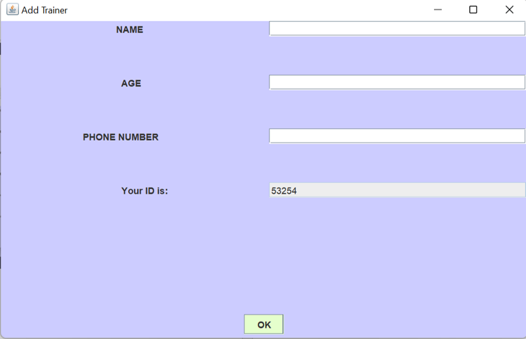
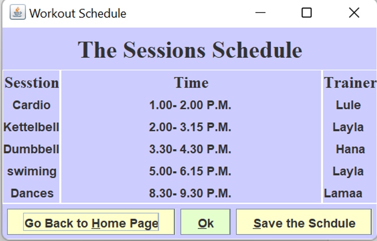

The Problem and the idea:
We want to build a system that helps fitness and health clubs
handle all transactions all in one place, so no data would be lost or hard to
manage. The system will manage the memberships, the coaches and the
workout classes given. We want to build a system that subscribe new
client and new trainers, display their information, assign them to workout
session, and store all the data in files.
This video aims to spread awareness to the general population about thermal imaging attacks.
Attacks that use thermal cameras to detect the heat trace on keyboard or touchscreen to reconstruct
victim password. We want to increase the awareness of individuals in terms of reducing the possibility
of stealing private passwords by 70% by thieves who use thermal imaging devices through ways that
the individual does, which helps them to increase the difficulty for the thief to know the password. We
are committed to spread awareness to the Saudi public about the threats of the thermal imaging attack
and the protection methods they should take for defense. Most, if not all the time, we don’t check our
surroundings when entering a password into a device. Thermal imaging attacks are so simple that they
can be done over the shoulder without notice. We will start by taking enough notes about people's
awareness of the problem during the next week, and then in the following weeks, we will create an
awareness video about thermal imaging attacks. We will finish after 5 weeks, which is before our
deadline on 11 February.
 




